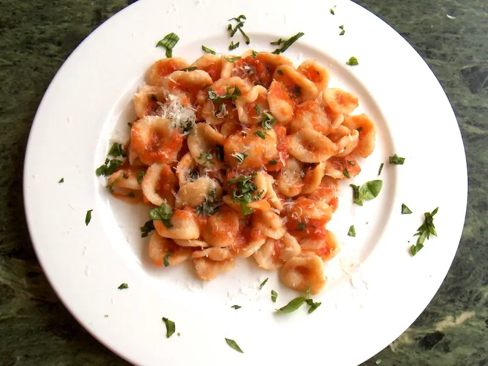

Фото: https://www.flickr.com/people/turos/, Retouched by AM, CC BY 2.0

Паста с томатным соусом
Спагетти с соусом из томатов, чеснока и базилика за 25 минут
25 мин4 порц.479 ккал на порциюБ 13 · Ж 12 · У 80Итальянская кухня
Продукты на 4 порц.
- Макароны400 г
- Томаты в собственном соку2 шт
- Чеснок3 зуб.
- Оливковое масло3 ст. л.
- Сахар1 ч. л.
- Соль1 ст. л.
- Перец чёрный молотыйпо вкусу
- Сушёные травы1 ч. л.
- Базилик по желанию1 пучок
- Вода3000 мл
Как готовить
- Поставьте кипятить 3 л воды для пасты.
- Нарежьте чеснок тонкими пластинами. Прогрейте его в оливковом масле на слабом огне 1-2 минуты, пока не появится запах. Чеснок не должен темнеть.
- Добавьте томаты, разомните их ложкой, положите сахар, травы и треть соли. Тушите на среднем огне 15 минут, пока соус не загустеет.
- Посолите кипящую воду оставшейся солью, сварите пасту на 1 минуту меньше, чем написано на пачке.
- Отлейте полстакана воды от варки, пасту откиньте на дуршлаг.
- Переложите пасту в соус, добавьте немного отложенной воды и прогрейте 1 минуту, помешивая. Поперчите и посыпьте рваным базиликом.
Совет. Вода от варки пасты делает соус гладким и помогает ему прилипнуть к макаронам. Если хотите тёртый пармезан сверху, блюдо станет вегетарианским, но не веганским.